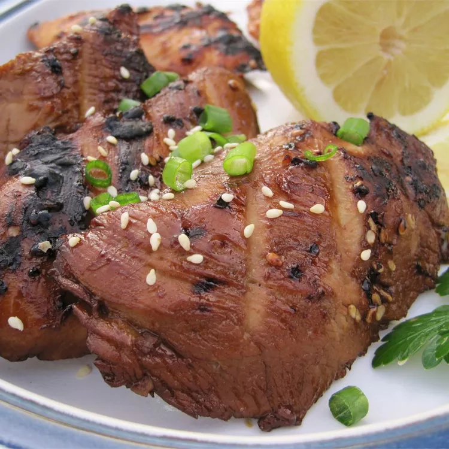

Teriyaki
Home

Description
This grilled teriyaki chicken is very easy to prepare and great
for a hot summer's evening. Leftovers are delicious on a green
salad or in a sandwich. Be sure to grill very hot and very fast.
Ingredients
- teriyaki sauce
- lemon juice
- minced fresh garlic
- sesame oil
- chicken breast
Method
- Whisk teriyaki sauce, lemon juice, garlic, and sesame oil together in a bowl and
pour into a resealable plastic bag. Add chicken, coat with marinade, squeeze out
excess air, and seal the bag. Marinate in the refrigerator for at least 1 hour
to overnight, turning every so often.
- When ready to cook, preheat an outdoor grill for high heat and l
ightly oil the grate.
- Remove chicken from marinade and shake off excess. Discard remaining marinade.
- Cook chicken on the preheated grill until no longer pink in the center and the
juices run clear, 6 to 8 minutes per side. An instant-read thermometer inserted
into the center should read at least 165 degrees F (74 degrees C).